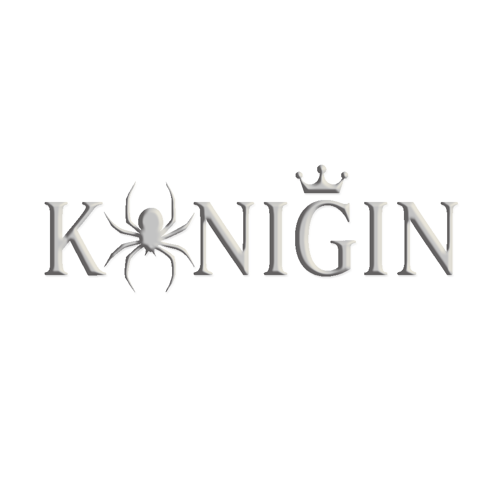

THE PARLOUR
会客厅
About · 关于我
欢迎来到 KÖNIGIN 的会客厅。
这里是属于我自己的档案馆 —— 一个我用来存放文字、角色与世界的地方。有些故事已经写完，有些世界仍在生长。
我写的内容大多围绕着几位角色与他们的平行宇宙展开，偏好克制、阴翳、带有一丝维多利亚气质的叙事。如果你在这里停留片刻、读到喜欢的段落，或只是单纯坐一会儿，我都会感到欣慰。
这是一个私人站点，所有内容属于我本人。请不要转载或搬运，谢谢。

← HomeTHE PARLOUR
About · 关于我
欢迎来到 KÖNIGIN 的会客厅。
这里是属于我自己的档案馆 —— 一个我用来存放文字、角色与世界的地方。有些故事已经写完，有些世界仍在生长。
我写的内容大多围绕着几位角色与他们的平行宇宙展开，偏好克制、阴翳、带有一丝维多利亚气质的叙事。如果你在这里停留片刻、读到喜欢的段落，或只是单纯坐一会儿，我都会感到欣慰。
这是一个私人站点，所有内容属于我本人。请不要转载或搬运，谢谢。